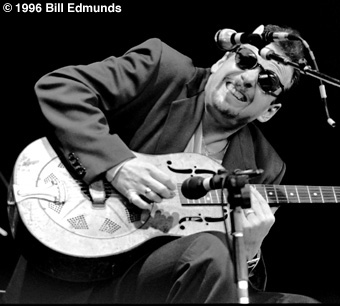

"Ронни Эрл сегодня один из
самых серьезных блюзовых гитаристов.
Я люблю его как сына, и горжусь им."
B.B. King

К концу третьего десятилетия своей профессиональной карьеры Ронни Эрл имеет статус доцента гитарного факультета музыкального колледжа Беркли (Berklee), впечатляющий каталог своих записей и целую коллекцию престижных наград, включая две самые дорогие сердцу блюзмена премии W.C. Handy.Настоящее имя Ронни Эрла - Рональд Хорват (Ronald Horvath). Родился он в 1953-м году в Куинс (Queens), Нью-Йорк Сити.
В юношестве Ронни интересовался джазом, слушал Уэса Монтгомери (Wes Montgomery), Пэта Мартино (Pat Martino), Кэнни Баррелла (Kenny Burrell). Любил также Колтрейна (John Coltrane), Монка (Thelonious Monk), Мингуса (Charles Mingus). Но начал играть на гитаре достаточно поздно, когда ему было уже за двадцать. Случилось это после того, как он перебрался из Нью-Йорка в Бостон для учебы в местном университете. Как-то приятель захватил его на концерт Мадди Уотерса (Muddy Waters), после чего Ронни уже не сомневался в том, чем будет заниматься в дальнейшем. Проходя закалку в хаусбэнде легендарного Speakeasy Club (Кэмбридж, штат Массачусетс), Ронни старательно шлифовал свой гитарный почерк сложившийся под влиянием Роберта Джуниор Локвуда (Robert Jr. Lockwood), Мэджика Сэма (Magic Sam), Фредди Кинга (Freddie King) и Ти-Боун Уокера (T-Bone Walker). В то время ему доводилось выступать сайдмэном у таких легенд как Биг Мама Торнтон (Big Mama Thornton), Отис Раш (Otis Rush), Биг Уолтер Хорнтон (Big Walter Hornton), и это была такая школа, о которой любой рядовой блюзмен может только мечтать.
По совету Мадди Уотерса он изменил фамилию на Эрл в честь одного из своих кумиров - Эрла Хукера (Earl Hooker).
- Когда я общался с Мадди и всеми этими старыми чуваками, то они никак не могли произнести мою настоящую фамилию - вспоминал об этом Ронни.
В скором времени о бостонском гитаристе заговорили в Чикаго и Техасе. А в 1979-м году Ронни Эрла просят занять место Дюка Робилларда (Duke Robillard) в "Roomfull of Blues", и следующие восемь лет он проводит в дороге, в составе одной из самых гастролирующих блюзовых групп.
Будучи еще участником этого биг-бэнда, Ронни неоднократно работал в студии над записью своего материала, которым заинтересовался новоорлеанский лейбл "Blacktop". На этой фирме увидели свет кассета "Smokin'" ('82) и винил "They Call Me Mr. Earl" ('84).
В 1987-м году Ронни оставил "Roomfull of Blues" для того, чтобы начать сольную карьеру. Тогда же он основал свою собственную группу, получившую название Ronnie Earl & the Broadcasters.
В 88-м на "Blacktop" Ронни выпустил альбом "Deep Blues" , представивший две неизданные ранее сессии, а затем вдогонку и "Soul Searching", "убойный" по составу приглашенных инструменталистов (Джерри Портной (Jerry Portnoy), Рон Леви (Ron Levy), Дюк Робиллард). Вообще, сотрудничество Ронни Эрла с лейблом "Blacktop" было очень продуктивным. За 10 лет он издал здесь семь альбомов, включая сборник-ретроспективу "Test Of Time", записывался вместе с замечательными вокалистами Шуга Рэй Норсиа (Sugar Ray Norcia), Кимом Уилсоном (Kim Wilson), Даррелом Нулисчем (Darrell Nulisch), Майти Сэмом МакЛэйном (Mighty Sam McLain), пианистом Дэйвом Максвелом (Dave Maxwell) . "Принимал у себя" и "гостил" на пластинках таких величин, как Рон Леви, Хуберт Самлин (Hubert Sumlin), Эрл Кинг (Earl King), Роберт Джуниор Локвуд...
Последующие релизы "Steel River"('93 Audioquest) и "Language of the Soul" ('94 Bullseye Blues) не только закрепили за Ронни репутацию гитариста играющего технично, тепло и с чувством, но и заставили говорить о нем, как о "таланте, заслуживающем мирового признания". Его концертник "Blues Guitar Virtuoso - Live in Europe"(еще известный как "Blues & Forgiveness"), записанный в Бремене в 1993-м году, по сей день считается одним из лучших "живых" гитарных альбомов, изданных когда-либо.
На упомянутых "Language of the Soul" и "Blues Guitar Virtuoso..." Ронни Эрл обозначил свое увлечение скрещивать блюз с джазом. Своеобразной кульминацией этого увлечения стала работа "Greatful Heart: Blues & Ballads" ( '96 Bullseye Blues). Кроме старожилов "Broadcastes" - басиста Рода Карея (Rod Karey), барабанщика Пэра Хэнсона (Per Hanson) и неподражаемого органиста Брюса Каца (Bruce Katz), в записи принимал участие легендарный тенор-саксофонист Дэвид "Фэтхэд" Ньюмэн (David "Fathead" Newman). Альбом получил восторженные отзывы у критиков и коллег по "цеху". Журнал "Downbeat" назвал его "лучшим блюзовым альбомом года". На последовавшей за этим 18-ой Церемонии вручения премий W.C. Handy, Ронни Эрл был впервые удостоен награды, как "лучший блюзовый инструменталист-гитарист".
Экземпляр "Greatful Heart" попал в руки Чаку Митчелу (Chuck Mitchell), президенту "Verve", дочернего подразделения компании "Polygram". Пластинка настолько ему понравилась, что он незамедлительно предложил Ронни Эрлу контракт.
Такое сотрудничество всегда было мечтой и целью Ронни. Перед ним открывались совершенно новые возможности. Первая (и как потом выяснилось, последняя) работа Ронни на "Verve" была спродюсирована студийной легендой Томом Даудом (Tom Dowd), записывавшим The Allman Brothers, Cream, Боба Марли (Bob Marley), Арету Франклин (Aretha Franklin), Рэя Чарльза (Ray Charles). Знаменитая "Layla" Эрика Клэптона - тоже была делом рук Дауда. Ронни был в отличной форме. Восемь вещей для новой пластинки написал он сам, две - Брюс Кац, еще один трек представлял собой кавер-версию монковской "Round Midnight" . Главным сюрпризом диска считалось участие Грэга Оллмэна (Gregg Allman) в песне "Everyday Kind of Man".
Альбом, названный "Colour of Love" ('98 Verve/Polygram) разошелся тиражом 65,000 экземпляров, и принес Ронни Эрлу то самое мировое признание, которого гитарист давно заслуживал. Его мастерство снова было отмечено премией W.C. Handy в номинации "лучший блюзовый гитарист".
Однако, сотрудничество с мэйджером имело и свою негативную сторону.
- "Colour of Love" был очень удачным для меня - рассказывает Ронни - Еще бы! Обо мне узнали во всем мире!
Казалось, все шло отлично. Но я помнил цифру 65,000. Мне постоянно твердили: 65,000 копий - хорошая цифра, но 100,000 - гораздо лучше. Вокруг только и говорили, что о еще больших продажах и новых турах в поддержку альбома. И все закрутилось слишком быстро для меня...
Бесконечная череда гастрольных поездок обернулась для Ронни не только физической усталостью, но и крайним эмоциональным истощением и обострением диабета.
По возвращении из тура по Австралии и Новой Зеландии Ронни Эрл разрывает отношения сначала со своим концертным агентством, а следом и с "Verve/Polygram".
Не смотря на то, что всего через три дня в его "кармане" был контракт с "Telarc", у Ронни появилось желание "на время уйти от всего". Что он и сделал. Какой-то период не было ни концертов, ни даже группы...
В июне 2000-го на "Telarc" увидел свет новый релиз Ронни Эрла и "the Broadcasters" названный "Healing Time". Судя по названию, дела у маэстро идут на поправку.
Подготовка этого материала совпала с выходом на "Telarc" альбома "Ronnie Earl & Friends". Гостевой список здесь открывает James Cotton, продолжают Luther "Guitar Junior" Johnson, Irma Thomas, Kim Wilson, Levon Helm. Запись, отражает полное взаимопонимание Ронни Эрла с теми, кто дорог его сердцу на протяжении уже многих лет.
www.ronnieearl.com - очень подробная дискография
www.tomguerra.com/ronnie-earl.html - интересная информация для гитаристов: гитарный парк Ронни Эрла, прочее оборудование, используемое маэстро.
Подготовил Алексей Макаров (г.Владимир)